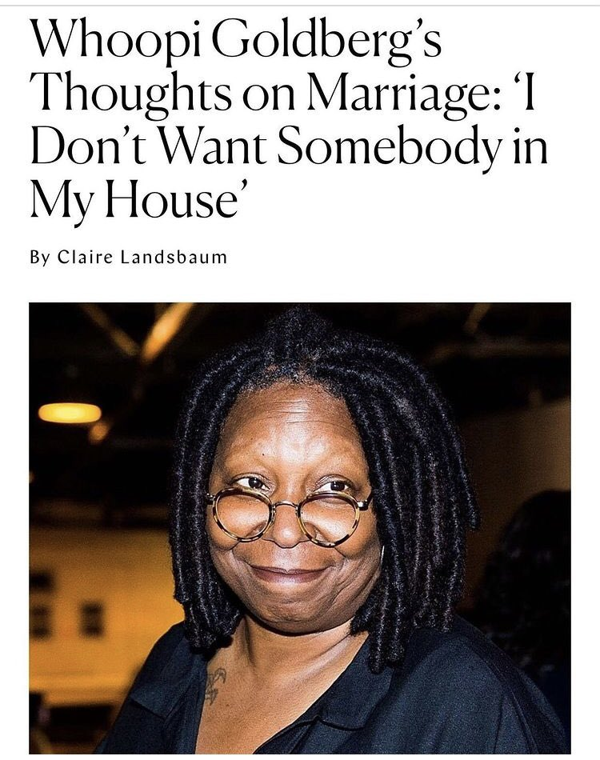

The asexual flag
Asexuality is a sexual orientation, where people feel very little to no sexual attraction towards other people. Just like other sexual orientations, asexuality is not a choice. The word "Asexual" is sometimes shortened to "Ace". (Note: the word "allosexual" refers to people who are not asexual, to people who do experience sexual attraction.)
What does this mean?
This means that asexuals do not have a sexual need. For many asexuals, this means they see no reason to have sex with other people. Some asexuals may choose to have sex for reasons such as wanting to make their partner happy or wanting children. Some asexuals may choose to not have sex, due to not seeing a point in it. Some asexuals are sex-repulsed, which means that along with not seeing a point in having sex, they find the idea of sex quite uncomfortable.
Another Way to Explain it
Imagine you're reading a first-person book where the main character describes their thoughts when seeing their crush. They describe that they really feel the urge to punch their crush in the back. Thoughts go through your head, like "Why would he want to do that?" and "But they're not even in a boxing ring, why would he want to punch someone right now?" It doesn't seem to make sense, right? Now replace "punch someone in the back" to "have sex." That's how it feels to be asexual.
Definitions of the Spectrum
Because asexuality is a spectrum, some people on the ace spectrum sometimes do feel sexual attraction, but only in rare situations. These sexualities have their own labels, but they're still under the asexual umbrella:
- Demisexuals only feel sexual attraction to people they already have an emotional bond with. (This is different from being allosexual. Allosexuals can feel sexual attraction to people they don't have a bond with, and allosexuals often *choose* not to act on that attraction. However, demisexuals do not feel any sexual attraction towards people they don't have a bond with.)
- Most days, Grey-asexuals don't often feel sexual attraction. On rare days, however, they do feel sexual attraction. Because they usually don't feel sexual attraction, they are still under the asexual umbrella. 